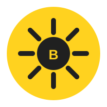

Primary logo
Use for website headers, business cards, invoices, flyers and formal brand applications.
Bringing the Bright Back. A unified visual direction for digital and physical customer touchpoints.
Use for website headers, business cards, invoices, flyers and formal brand applications.

Use for social profile images, equipment stickers, uniforms, vehicle decals and compact applications.
#FFD21F
#202020
#FFF9E6
#7FAF45
White or cream base, charcoal type, yellow edge or reverse.
Charcoal or white uniforms with the yellow BRYTLY mark.
White vehicle, oversized yellow graphic and charcoal lettering.
Clean white/cream layouts with yellow category markers and strong CTAs.
Yellow corner/stripe system with consistent typography and sparkle motif.
Mostly white with yellow accents for receipts, appointment and referral cards.
Yellow rounded stickers featuring the compact BRYTLY secondary mark.
Charcoal/white equipment with yellow labels and decals.
Bright, clean service photography with the same yellow/charcoal signature.
Bringing the Bright Back.
You relax. We bring the bright back. • A brighter kind of clean. • Fresh spaces. Brighter days. • Leave the cleaning to BRYTLY. • Your space. Our sparkle.